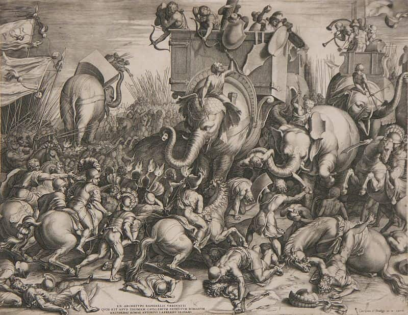
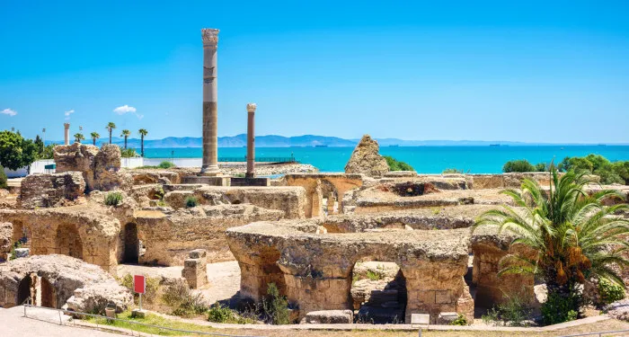
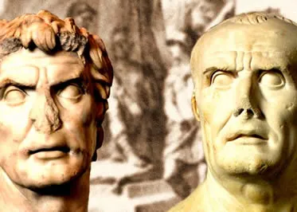
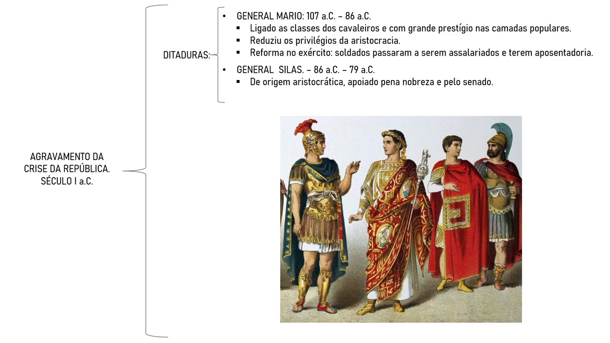
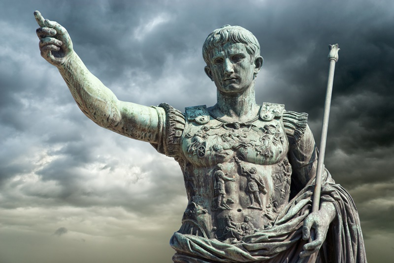
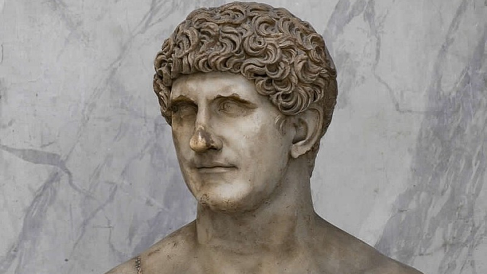

Nesse modelo político o poder ainda recaia nas mãos
do Senado mas ocorreu a instauração de mais duas instituições políticas, as Assembléias e os Magistrados.
Uma amostra de uma assembleia calorosa.
Assembléias
Eram reuniões entre a população para decidir a eleição de senadores, decisões de exercíto e militares (assembléias centoriais),
divisão de tribos (assembléias tribais), questões religiosas, confirmação de sacerdotes, declaração de testamentos, etc (assembléias curiais).
Magistrados
Eleitos em assembléias culturais com forte influência do Senado, em geral executavam funções administrativas da cidade.
Eles se dividiam entre mais seis repartições, os cônsules, pretores, censores, quetores e edis, todos com cargos de importância
para a manutenção do exército, da justiça e de cultos religiosos.
Foi nesse período que Roma chegou no seu apogeu de poder sobre os outros povos graças às políticas expansionistas territoriais
que fizeram com que ela dominasse e conquistasse as provincías ao redor do Mar Mediterâneo e o próprio mar que já era dominado
pelos povos cartagineses da antiga cidade de Cartago, no norte da África. Essas disputas de territorio foram travadas, inicialmente, afim de obter defesa diante de povos vizinhos rivais e aquisição de terras
necessárias à agricultura e ao pastoreio, mas logo se revelou uma fonte de riquezas em metais preciosos e em escravos.
Início da Expansão
No decorrer dos séculos IV e III a.C, Roma enviou suas legiões ao norte, contra os etruscos, e para o sul da península itálica,
em guerras contra os samnitas e algumas cidades da da Magna Grécia.
Essa arrancada para o sul colocou os romanos em confronto com os cartagineses, citados anteriormente, rivalidade essa que resultou
nas Guerras Púnicas. Os sobreviventes derrotados foram
vendidos como escravos e o território cartaginês tornou-se província romana. Com a vitória contra os cartagineses, Roma iniciou sua
expansão pelo Mediterrâneo oriental e nos dois séculos seguintes conquistou a Grécia e seus territorios helenistico
, a Síria e o Egito. Desse modo, o Mediterrâneo transformou-se poderio romano, o Mare nostrum como os romanos o chamavam.
Com contato com as sociedades de outras províncias desencadeou nas inovações de costumes, das cultura, idioma e religião. Diante o crescimento,
de Roma, as políticas e administrações anteriores já não serviam para tamanho poder e povos a governar.

Guerra punicaTerritórios conquistados por Roma

Ruínas da cidade de Cartago
Para contornar isso, Roma conheceu os governos autoritários dos Generais Mario e Silas que haviam recebido grandes pretígios
com suas vitórias no exército. No poder, os generais travaram diversos conflitos sobre a maneira de governar na civilização romana
e, especialmente os direitos a favor da plebe, defendida por Mario. Silas, em contrapartida, defendia aristocracia
no fim, em saiu vitório foi Silas, após a morte de Mário, instaurando uma ditadura em Roma contando com ele como líder.

Escultura dos generais Silas (esquerda) e Mário (direita)

Silas veio abdicar do poder em 79 a.C e nas duas décadas seguintes crises vinheram a acontecer, abrindo caminho para os
Triunviratos, os governo de três pessoas.
Primeiro Triunvirato
Foi composto em 59 a.C por três políticos de prestígio: Pompeu,
Crasso
e Júlio César. OS dois primeiros eram famosos na Roma antiga
devido aq algumas vitórias militares, enquanto César, apesar de ter um cargo alto na república, teve que aumentar sua popularidade.
Para isso, ele partiu para a Gália (atual França) e conquistou esse território, assim como parte parte da ilha da Bretanha (atual Inglaterra),
consagrando-se como maior general da época. Os três governaram Roma, às vezes acima do Senado, e conseguiram conter uma série de rebeliões,
entre elas a de escravizados e juntos tinham o objetivo de alcançar a estabilidade política da potência.
Em 53 a.C, Crasso foi morto deixando Júlio César e Pompeu disputando poder. Em meio a uma crise, o Senado promoveu Pompeu
como consul interino e ordenou o desmobilizamento dos exécitos de Júlio César que não acatou a ordem. Em 49 a.C, ele e seu exército marcharam
em direção ao centro do poder de Roma e perseguiram Pompeu e seus aliados até a Grécia, onde o derrotou. A partir daí, Júlio César torna-se ditador.
Morte de Júlio César por seus opositores
Seu modo de governo ajudou na construção de obras públicas reoganizando finanças, distribuindo terras. Suas ações beneficiavam a plebe e o exército,
gerando um grande impecílio de poder para os patrícios e o próprio Senado que não gostavam da sua maneira de governar e organizaram uma conspiração para sua morte.
Seus opositores o ocusaram de governar acima do Senado ao reservar o direito de aceitar ou rejeitar resultados eleitorais para magistrados e outros cargos
inferiores e – talvez o pior de tudo – havia rumores de estar pronto para se declarar rei. Com tudo isso, César foi assassinado em uma reunião do Senado por
quase todos que estavam no local, em 15 de março de 44 a.C, dando fim ao período do Primeiro Triunvirato.
Segundo Triunvirato
Essa fase foi a que marcou o fim da República Roma e o responsável por esse feito foi o sobrinho de Júlio César, Otávio, que junto
com o herdeiro político Marco Antônio e o banqueiro Lépido, formaram o Segundo Triunvirato governando por cinco anos unindo poder em
maior objetivo de eliminar todos que haviam conspirado contra Júlio César. Eles dividiram o poder de comandar as duas principais
potências de Roma; Marco Antonio ficou responsável pelo Oriente, Otávio ficou com o Ocidente enquanto Lépido ficou com o cargo de
Pontífice Máximo
Aos poucos, Lépido e Marco Antônio foram afastados em razão das intensas rivalidades entre os três. Marco Antônio rompeu com Otávio e em 32 a.C,
irrompeu guerra contra os governantes, as forças de Otávio derrotaram a de Marco e no ano seguinte tomaram o Egito, que era governado pela ilustre
Cleopatra 7, se tornando
mais uma de muitas províncias romanas.
Após voltar à Roma, o Senado o intitulou como Augusto, de conotação religiosa; Princeps senatus
, primeiro dos senadores; Imperator, comandante absoluto do exercíto; Pontifex maximus, sacerdote supremo;
o tribunato vitalício da plebe; e Pater patrie, pai da plebe.
Com esses títulos, Augusto, como passou a ser chamado, tornou-se o primeiro Imperador de Roma, detendo poder político superior
ao Senado e a outros magistrados.

Estátua do Imperador Augusto

Estátua de Marco Antonio